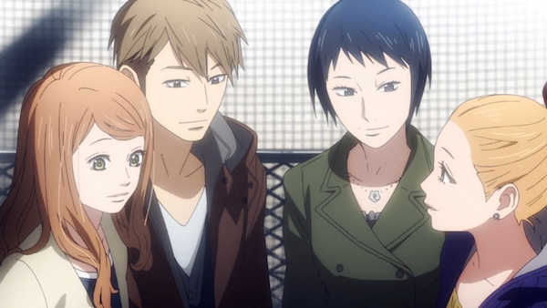

Anime Review: 'Orange'

Orange is a romance/high school drama with a speculative twist. Sixteen-year-old Naho Takamiya discovers a letter from herself from ten years into that future that tells her to watch for a new transfer student, Kakeru Naruse, who will become one of her friends. Though happiness has not eluded future Naho, she has many regrets over things that she wishes her younger self had done differently.
As predicted, Kakeru joins her class that same day, and he’s quickly absorbed into Naho’s circle of friends (both male and female). Though she knows from her letter that Kakeru will not live to see the end of the school year, teenage Naho can’t help falling in love with him.
Orange at its best can be an emotional watch, not because we know that Kakeru does not exist ten years from now, but because his death didn’t have to happen, and we get a front row seat to all the missed moments that future Naho hopes to change to make a better future.
The bulk of the series takes place during Naho’s high school years, but there are periodic flash forwards that show future Naho and her high school friends ten years later, and the events that lead up to why she decides to send the letter.

Review:
Pros: Realistic depiction of depression, characters that feel like people we were or knew in high school without being stereotypes, how present and future stories are woven together.
Cons: Second half’s plot revelations seem a little contrived, some questionable decision making by characters (though generally forgivable due to their ages), doesn’t really address what life will be like post-ending
Film Stats:
- Title: Orange
- Genre: Romance, Drama, Slice of Life
- Production: Telecom Animation Film
- Length: 13 episodes
- Release Date: 07/2016